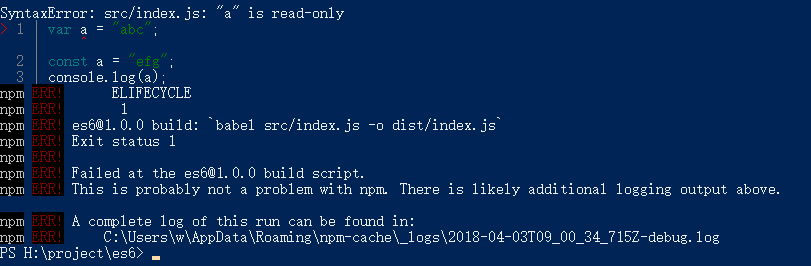
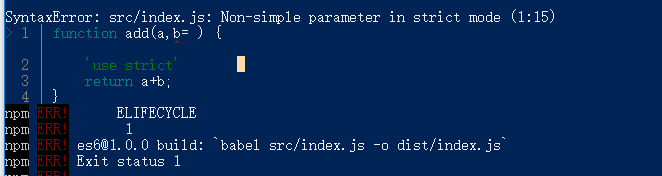

前言 在编程过程中，我一直是使用es5来进行编程。但随着es6、es7的引入，意识到学习它们的必要性。因此，现在开始学习es6新语法，以下是根据学习视频记录的笔记。
1.初始化项目 在安装Babel之前，需要用npm init先初始化我们的项目。打开终端或者通过cmd打开命令行工具，进入项目目录，输入下边的命令：
需求：如何将dist文件夹中的js将es6转化为es5编程。
1 2 3 4 npm install -g babel-cli npm install --save-dev babel-preset-es2015 babel-cli babel src/index.js -o dist/index.js
2.声明方式 ES6的三种声明方式：
var：声明全局变量;
let：声明局部变量，防止数据污染;
const：声明常量,用来定义一个不可变的常量，如果改变了就会报语法错误。
var 1 2 3 4 5 var a = 'abc' ;window .onload = function ( console .log(a); } 控制台打印出：abc，说明var 声明的a是全局变量
let 1 2 3 4 5 6 7 { let a = 'abc'; } window.onload = function () { console.log(a); } 结果：报错。说明let声明的是局部变量，它只在它所在的语句块中有用。
const 1 2 3 var a = "abc"; const a = "efg"; console.log(a);
会报语法错误：

3.解构赋值 什么是解构？ES6允许按照一定模式，从数组和对象中提取值，对变量进行赋值，这被称为解构。
解构的作用？解构赋值在实际开发中可以大量减少我们的代码量，并且让我们的程序结构更清晰。
数组的结构赋值： 1 2 3 4 5 6 let a=0 ;let b=1 ;let c=2 ;let [a,b,c] = [0 ,1 ,2 ];
1 2 3 数组模式和赋值模式统一： 可以简单的理解为等号左边和等号右边的形式要统一，如果不统一解构将失败。
数组函数的解构赋值 1 2 3 4 5 6 7 let arr = ['good' ,'better' ,'best' ];function fn (a,b,c ) console .log(a); console .log(b); console .log(c); } fn(...arr);
解构的默认值 ：
解构赋值是允许你使用默认值的
1 2 let [foo = true] =[]; console.log(foo); //控制台打印出true
1 2 3 let [a,b="world" ]=['hello ' ];console .log(a+b);
注意：undefined 和 null的区别
1 2 3 let [a,b="world" ]=['hello ' ,undefined ];console .log(a+b);
1 2 3 let [a,b="world" ]=['hello ' ,undefined ];console .log(a+b);
对象的解构赋值 1 2 let {a,b} ={a :"abc" ,b :"123" };console .log(a+b);
注意： 对象的解构与数组有一个重要的不同。数组的元素是按次序排列的，变量的取值由它的位置决定；而对象的属性没有次序，变量必须与属性同名，才能取到正确的值。
对象函数的解构赋值 1 2 3 4 5 6 7 8 9 let json = { a:'abc' , b: 123 }; function fn ({a,b=456 } ) console .log(a); console .log(b); } fn(json);
es6小坑：
1 2 3 4 5 6 7 8 9 let foo;{foo} = {foo : "abc" }; console .log(foo);let foo;({foo} = {foo : "abc" }); console .log(foo);
字符串的解构赋值 1 2 3 4 5 6 7 8 9 10 11 12 const [a,b,c,d,e]="hello" ;console .log(a);console .log(b);console .log(c);console .log(d);console .log(e);
4.对象扩展运算符和rest运算符 对象扩展运算符(…) 当编写一个方法时，我们允许它传入的参数是不确定的,这时候可以使用对象扩展运算符来作参数。
1 2 3 4 5 6 7 8 function fn (...arg ) console .log(arg[0 ]); console .log(arg[1 ]); console .log(arg[2 ]); console .log(arg[3 ]); } fn(1 ,2 ,3 );
作用：用来解决数组赋值会改变原数组数据的问题。
1 2 3 4 5 let arr1 = ['a' ,'b' ,'c' ];let arr2 = arr1;arr2.push("d" ); console .log(arr2); console .log(arr1);
使用对象扩展运算符后
1 2 3 4 5 let arr1 = ['a' ,'b' ,'c' ];let arr2 = [...arr1];arr2.push("d" ); console .log(arr2); console .log(arr1);
rest运算符(…) 也用”…”表示
用法：
1 2 3 4 5 6 7 8 9 10 11 function fn (a,b,...arg ) console .log(a); console .log(b); console .log(arg.length); for (let val of arg){ console .log(val); } } fn(0 ,1 ,2 ,3 ,4 ,5 ,6 ,7 );
5.字符串模板 使用方法：字符串必须使用’`’（~下面的符号）包围，然后使用${变量}。
1 2 3 let name = 'whittney' ;let str = `大家好，我是${name} ` ;document .write(str);
字符串的方法：
1.查找是否存在：includes()
1 2 3 let name = 'whittney' ;let str = `大家好，我是${name} ` ;console .log(str.includes(name));
2.判断开头是否存在：startsWith()
1 2 3 let name = 'whittney' ;let str = `大家好，我是${name} ` ;console .log(str.startsWith(name));
3.判断结尾是否存在：endsWith()
1 2 3 let name = 'whittney' ;let str = `大家好，我是${name} ` ;console .log(str.endsWith(name));
4.复制字符串：repeat()
1 2 let name = 'whittney' ;console .log(name.repeat(3 ));
6.数字操作 1.如何表示二进制数？
二进制的英文单词是Binary，以0(零)和b(或B)开头,后面为二进制值即可。
1 2 let binary = 0b0101 ;console .log(binary);
2.如何表示八进制数？
八进制的英文单词是Octal，以0(零)和o(或O)开头,后面为八进制值即可。
1 2 let octal = 0o0032 ;console .log(octal);
3.判断是否是数字
Number.isFinite( )来进行数字验证，只要是数字，不论是浮点型还是整形都会返回true，其他时候会返回false。
1 2 let a = 'a' ;console .log(Number .isFinite(a));
4.判断是否为整数Number.isInteger(xx)
1 2 let a=111.123 ;console .log(Number .isInteger(a));
5.转换为整数
1 2 let a= '111.123' ;console .log(Number .parseInt(a));
6.转换为浮点数
1 2 let a= '111.123' ;console .log(Number .parseFloat(a));
7.ES6中新增的数组知识 1.json数组格式是什么样的？
1 2 3 4 5 6 7 let json = { '0' : 'a' , '1' : 'b' , '2' : 'c' , length:3 }
如何将json数组转化为数组？
1 2 3 4 5 6 7 let json = { '0' : 'a' , '1' : 'b' , '2' : 'c' , } let arr = Array .from(json);console .log(arr);
2.Array.of()方法
将一堆文本或者变量转换成数组
1 2 let arr = Array .of("abc" ,3 ,5 );console .log(arr);
3.find()方法
从数组中查找元素
有三个参数：
val：表示当前查找的值;
index：表示当前查找的数组索引;
arr：表示当前数组。
1 2 3 4 5 let arr = [1 ,3 ,5 ,7 ,9 ];console .log(arr.find(function (val,index,arr ) return val >5 ; }))
4.fill()方法
数组进行填充，其实就是替换数组元素。
也有三个参数：第一个参数是要填充的内容，第二个参数是开始填充的位置，第三个是填充到的位置（不包括）。
1 2 3 let arr = [0 ,1 ,2 ,3 ];arr.fill('abc' ,1 ,3 ); console .log(arr);
5.for..of循环
输出内容
1 2 3 4 let arr = ['a' ,'b' ,'c' ];for (let item of arr){ console .log(item); }
输出索引
1 2 3 4 let arr = ['a' ,'b' ,'c' ];for (let index of arr.keys()){ console .log(index); }
同时输出内容和索引
1 2 3 4 5 6 7 let arr = ['a' ,'b' ,'c' ];for (let [index,val] of arr.entries()){ console .log(index+':' +val); }
6.entries()
生成的是Iterator形式的数组,好处就是可以让我们在需要时用next()手动跳转到下一个值。
1 2 3 4 5 6 let arr = ['a' ,'b' ,'c' ];let list = arr.entries();console .log(list.next().value); console .log(list.next().value); console .log(list.next().value);
7.in
判断对象或者数组中是否存在某个值。
对象判断：
1 2 3 4 5 let obj = { a: 'abc' , b: 123 } console .log('a' in obj);
数组判断：
1 2 let arr= ['a' ,'b' ];console .log(0 in arr);
8.箭头函数 ES6中给我们增加了默认值的操作
1 2 3 4 function add (a,b=3 ) return a+b; } console .log(add(1 ));
主动抛出错误:vue框架中就是这样抛出错误的。
1 2 3 4 5 6 7 function add (a,b=3 ) if (a == 0 ){ throw new Error ("a is error" ); } return a+b; } console .log(add(0 ));
获得需要传递的参数个数
如果你在使用别人的框架时，不知道别人的函数需要传递几个参数怎么办？ES6为我们提供了得到参数的方法(xxx.length)。
1 2 3 4 function add (a,b ) return a+b; } console .log(add.length);
两个坑：
（1）如果既使用默认值，又使用严谨模式的话，就会产生冲突。
1 2 3 4 5 function add (a,b=3 ) 'use strict' return a+b; } console .log(add(2 ));

（2）当参数中有默认值时，获取需要传递的参数个数时，不会计算有默认值的参数。所以这里需要注意的是add.length返回的参数个数是必须传递参数的个数。
1 2 3 4 function add (a,b=2 ) return a+b; } console .log(add.length);
这里说明一下，b的值不一定为2，也可以重新赋值
1 2 3 4 function add (a,b=2 ) return a+b; } console .log(add(2 ,4 ));
箭头函数 如果箭头函数就一句，可以直接这么写
1 2 let add = (a,b=1 )=> a+b;console .log(add(2 ));
否则需要加上花括号以及return
1 2 3 4 let add = (a,b=1 )=> { return a+b; } console .log(add(2 ));
箭头函数中不可加new，也就是说箭头函数不能当构造函数进行使用。
9.ES6中的对象 对象赋值 之前对象赋值是这样的
1 2 3 4 let name = 'whittney' ;let skill = 'web' ;let obj = {name : name,skill :skill};console .log(obj);
现在可以这样写
1 2 3 4 let name = 'whittney' ;let skill = 'web' ;let obj = {name,skill};console .log(obj);
对象key值构建 1 2 3 4 5 let key = 'name' ;let obj = { [key]:'whittney' }; console .log(obj);
Object.is( )方法进行对象比较 1 2 3 let obj1 = {name : 'whittney' };let obj2 = {name : 'lily' };console .log(Object .is(obj1.name,obj2.name));
10.Symbol数据类型 1 2 let a = Symbol ();console .log(typeof a);
symbol数据类型和string数据类型的区别？
1 2 3 let a = Symbol ('whittney' );console .log(a); console .log(a.toString());
symbol对象元素的保护作用 没有使用symbol之前
1 2 3 4 let obj = {name :'whittney' ,skill : 'web' ,age : 18 };for (let item in obj){ console .log(obj[item]); }
假如这时有一个需求：不想打印出age
1 2 3 4 5 6 7 let obj = {name :'whittney' ,skill : 'web' };let age = Symbol ();obj[age] = 18 ; for (let item in obj){ console .log(obj[item]); } console .log(obj);
11.Set和WeakSet数据结构 Set数据结构(数组) Set和Array 的区别是Set不允许内部有重复的值，如果有只显示一个，相当于去重。虽然Set很像数组，但是他不是数组。而且Set数据结构只能放数组。
1 2 let setData =new Set (['whittney' ,'lily' ,'lily' ,'tina' ]);console .log(setData);
Set数据结构的增删查，没有改
（1）增：setData.add()
1 2 3 4 let setData =new Set (['whittney' ,'lily' ,'tina' ]);console .log(setData); setData.add('jack' ); console .log(setData);
（2）删：setData.delete()
1 2 3 4 let setData =new Set (['whittney' ,'lily' ,'tina' ]);console .log(setData); setData.delete('lily' ); console .log(setData);
（3）查：setData.has()，返回的是true或者false。
1 2 let setData =new Set (['whittney' ,'lily' ,'tina' ]);console .log(setData.has('lily' ));
（4）删除所有值：setData.clear();
1 2 3 let setData =new Set (['whittney' ,'lily' ,'tina' ]);setData.clear(); console .log(setData);
（5）for…of…循环
1 2 3 4 let setData =new Set (['whittney' ,'lily' ,'tina' ]);for (let item of setData){ console .log(item); }
（6）forEach循环
1 2 3 4 let setData =new Set (['whittney' ,'lily' ,'tina' ]);setData.forEach(function (item ) console .log(item); })
WeakSet数据结构(对象) WeakSet数据结构只能放数组。WeakSet里边的值也是不允许重复的。
1 2 3 4 let weakObj = new WeakSet ();let obj = { a :'abc' ,b :'efg' };weakObj.add(obj); console .log(weakObj);
坑：
12.map数据结构 map的效率和灵活性更好。
（1）set()：赋值
1 2 3 4 5 6 7 let json = { name: 'whittney' , skill: 'web' }; var map = new Map ();map.set(json,'js' ); console .log(map);
（2）get()：取值
1 2 3 4 5 6 7 8 9 10 let json = { name: 'whittney' , skill: 'web' }; var map = new Map ();map.set(json,'js' ); map.set("iam" ,json); console .log(map.get(json)); console .log(map.get('iam' ));
（3）delete()：删除
1 2 3 4 5 6 7 8 let json = { name: 'whittney' , skill: 'web' }; var map = new Map ();map.set(json,'js' ); map.delete(json); console .log(map);
（4）map.has()：查找是否有key为某某的map
1 2 3 4 5 6 7 8 let json = {name: 'whittney' , skill: 'web' }; var map = new Map ();map.set(json,'js' ); console .log(map.has('js' )); console .log(map.has(json));
（5）clear()：清楚所有map
1 2 3 4 5 6 7 8 let json = { name: 'whittney' , skill: 'web' }; var map = new Map ();map.set(json,'js' ); map.clear(); console .log(map);
13.用Proxy进行预处理 声明Proxy
1 2 3 4 5 let pro = new Proxy ({ },{ })
第一个花括号就相当于我们方法的主体，后边的花括号就是Proxy代理处理区域，相当于我们写钩子函数的地方。
get属性
get属性是在你得到某对象属性值时预处理的方法，他接受三个参数：
target：得到的目标值
key：目标的key值，相当于对象的属性
property：这个不太清楚
1 2 3 4 5 6 7 8 9 10 11 12 13 let pro = new Proxy ({ add: function (val ) return val+100 ; }, name: 'whittney' },{ get : function (target,key,property) { console .log(target); console .log(key); return target[key]; } }) console .log(pro.name);
可以在控制台看到结果，先输出了target和key的值。相当于在方法调用前的钩子函数。
set属性
set属性是值你要改变Proxy属性值时，进行的预先处理。它接收四个参数。
target:目标值。
key：目标的Key值。
value：要改变的值。
receiver：改变前的原始值。
1 2 3 4 5 6 7 8 9 10 11 12 13 14 15 16 17 18 19 20 21 let pro = new Proxy ({ add: function (val ) return val+100 ; }, name: 'whittney' },{ get : function (target,key,property) { return target[key]; }, set : function (target,key,value,receiver) { console .log(`setting ${key} = ${value} ` ); return target[key] = value; } }) console .log(pro.name); pro.name='lily' ; console .log(pro.name);
apply属性 apply的作用是调用内部的方法，它使用在方法体是一个匿名函数。
1 2 3 4 5 6 7 8 9 10 11 12 13 let target = function ( return 'whittney' ; }; var handler = { apply(target, ctx, args) { console .log('do apply' ); return Reflect .apply(...arguments); } } var pro = new Proxy (target, handler);console .log(pro());
14.Promise ES6中的promise很好的解决了回调地狱的问题。
什么是回调地狱？
回调地狱指的是多层嵌套回调时，写完的代码层次过多，很难进行维护和二次开发。
1 2 3 4 5 6 7 function fn1 ( function fn2 ( function fn3 ( ... } } }
promise的基本用法 promise执行多步操作非常好用，那我们就来模仿一个多步操作的过程，那就以吃饭为例吧。要想在家吃顿饭，是要经过三个步骤的。
洗菜做饭。
坐下来吃饭。
收拾桌子洗碗。
这个过程是有一定的顺序的，你必须保证上一步完成，才能顺利进行下一步。
1 2 3 4 5 6 7 8 9 10 11 12 13 14 15 16 17 18 19 20 21 22 23 24 25 26 27 28 29 30 31 32 33 34 35 36 37 38 39 40 41 let state = 1 ;function step1 (resolve,reject ) console .log("1.开始-做饭" ); if (state == 1 ){ resolve("做饭--成功" ); }else { reject("做饭--错误" ); } } function step2 (resolve,reject ) console .log("2.开始-吃饭" ); if (state == 1 ){ resolve("吃饭--成功" ); }else { reject("吃饭--错误" ); } } function step3 (resolve,reject ) console .log("3.开始-洗碗" ); if (state == 1 ){ resolve("洗碗--成功" ); }else { reject("洗碗--错误" ); } } new Promise (step1).then(function (val ) console .log(val); return new Promise (step2); }).then(function (val ) console .log(val); return new Promise (step3); }).then(function (val ) console .log(val); });
假如有中间有一个步骤失败，后面的步骤就不会进行下去。
1 2 3 4 5 6 7 8 9 10 11 12 13 14 15 16 17 18 19 20 21 22 23 24 25 26 27 28 29 30 31 32 33 34 35 36 37 38 39 40 let state = 1 ;function step1 (resolve,reject ) console .log("1.开始-做饭" ); if (state == 1 ){ resolve("做饭--成功" ); }else { reject("做饭--错误" ); } } function step2 (resolve,reject ) console .log("2.开始-吃饭" ); if (state == 1 ){ resolve("吃饭--成功" ); }else { reject("吃饭--错误" ); } } function step3 (resolve,reject ) console .log("3.开始-洗碗" ); let state = 2 ; if (state == 1 ){ resolve("洗碗--成功" ); }else { reject("洗碗--错误" ); } } new Promise (step1).then(function (val ) console .log(val); return new Promise (step2); }).then(function (val ) console .log(val); return new Promise (step3); }).then(function (val ) console .log(val); });
15.类 类的使用 1 2 3 4 5 6 7 8 9 10 11 class Coder name(val){ return val; } skill(val){ console .log(this ); console .log(this .name('whittney' )+':' +val); } } let code = new Coder();code.skill('web' );
注意：
1.两个方法中间不要写逗号;
2.这里的this指类本身;
3.注意return 的用法。
类的传参 用constructor( )进行传参，传递参数后可以直接使用this.xxx进行调用。
1 2 3 4 5 6 7 8 9 10 11 class Coder constructor (a,b){ this .a = a; this .b = b; } add(){ return this .a + this .b; } } let code = new Coder(2 ,3 );console .log(code.add());
类的继承 声明一个htmler的新类并继承Coder类，htmler新类里边为空，这时候我们实例化新类，并调用里边的name方法。结果也是可以调用到的。注：使用extends继承。
1 2 3 4 5 6 7 8 9 10 class Coder name(val){ console .log(val); } } class htmler extends Coder } let code = new htmler;code.name('whittney' );
16.模块化 模块化操作主要包括两个方面。
export :负责进行模块化，也是模块的输出。
import : 负责把模块引，也是模块的引入操作。
模块化基本使用 在src目录下新建一个temp.js文件，就是一个模块。里面代码如下，输出一个模块变量：
1 export var name = 'whittney' ;
在src目录的index.js文件中以import的形式引入：
1 2 import {name} from './temp' ;console .log(name);
注意：
ES6的模块化不能直接在浏览器中预览，必须要使用Babel进行编译之后正常看到结果。
编译方法为：
一般我们的终端路径为项目名称下，如：project> 。但是执行以下命令时，需要进入project/src> 路径下
如何输出多个变量？ 方法：把它们包装成对象就可以了。
temp.js文件
1 2 3 4 5 6 7 8 var a = 1 ;var b = 2 ;var c = 3 ;export {a,b,c};export function add (arg1,arg2 ) return arg1+arg2; }
index.js
1 2 3 4 5 import {a,b,c,add} from './temp' ;console .log(a); console .log(b); console .log(c); console .log(add(2 ,5 ));
使用as避免暴露模块里面的变量名称 给模块起一个更语义话的名称,输出和输入时直接使用该名称。比如：a as x 意思是给模块a另起一个名称x,避免模块a的名称暴露。
temp.js文件
1 2 3 4 5 6 7 8 var a = 1 ;var b = 2 ;var c = 3 ;export { a as x, b as y, c as z }
index.js
1 2 3 4 import {x,y,z} from './temp' ;console .log(x);console .log(y);console .log(z);
export default的使用 temp.js文件
1 2 var a = 'whittney' ;export default a;
index.js文件
1 2 import str from './temp' ;console .log(str);
export和export default的区别
export和export default最大的区别就是export不限变量数 可以一直写，而export default 只输出一次 而且 export出的变量想要使用必须使用{}来盛放，而export default 不需要 只要import任意一个名字来接收对象即可。